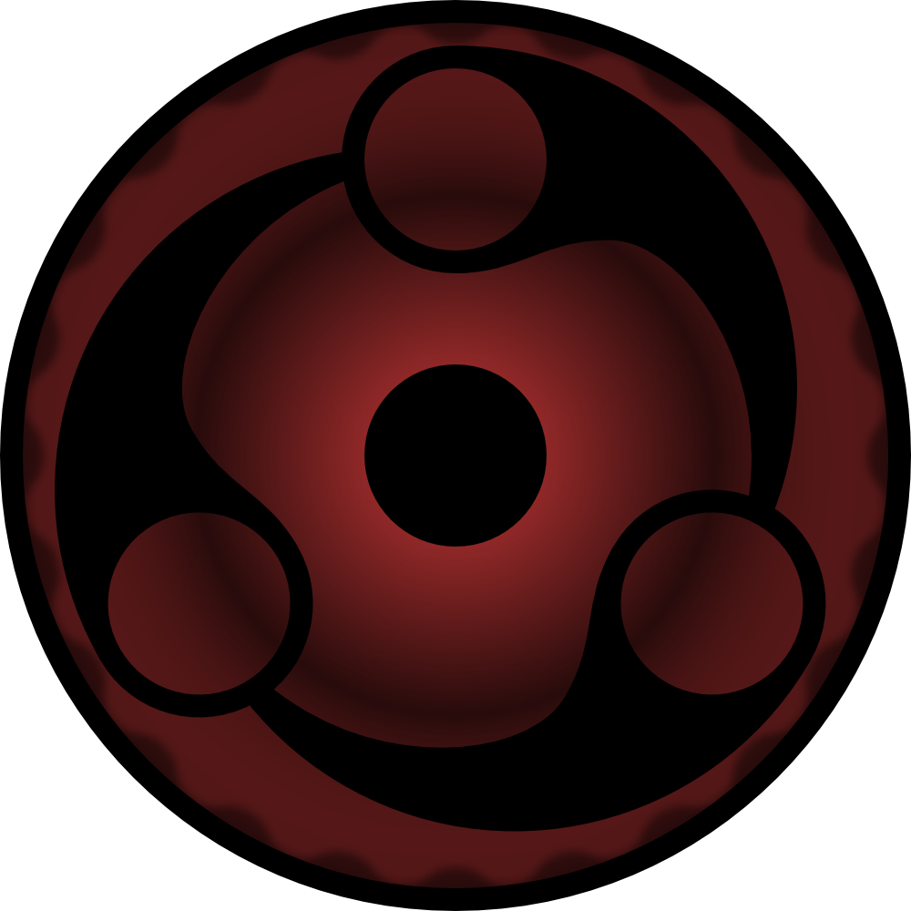

Рады видеть вас на нашем портале - здесь есть чем заняться как опытным поклонникам вселенной «Наруто», так и новичкам, недавно познакомившимся с серией! На нашем сайте вы узнаете больше о Биджу и о том как стать Хокаге).
Конохагакуре но Сато
 Конохагакуре но Сато (木ノ葉隠れの里, "Селение, скрытое в листве"), оно же Коноха — Какурезато, расположенное в Хи но Куни. Как одно из Шиноби Годайкоку, Конохагакуре имеет Каге в качестве своего лидера, известного как Хокаге, которых в истории деревни было семеро. Коноха располагается глубоко внутри леса у подножия горы, известной как Монумент Хокаге, на которой выгравированы лица всех, кто когда-либо занимал пост Хокаге.В основном показанное как наиболее мощное Какурезато,Коноха провела множество лет в относительном покое и стабильности.
Конохагакуре но Сато (木ノ葉隠れの里, "Селение, скрытое в листве"), оно же Коноха — Какурезато, расположенное в Хи но Куни. Как одно из Шиноби Годайкоку, Конохагакуре имеет Каге в качестве своего лидера, известного как Хокаге, которых в истории деревни было семеро. Коноха располагается глубоко внутри леса у подножия горы, известной как Монумент Хокаге, на которой выгравированы лица всех, кто когда-либо занимал пост Хокаге.В основном показанное как наиболее мощное Какурезато,Коноха провела множество лет в относительном покое и стабильности.
Стандартное одеяние шиноби Конохи состоит из синей или чёрной рубашки, на которой могут присутствовать или отсутствовать спиралевидные узоры на плечах, наряду со штанами того же цвета под зелёным бронежилетом, который также имеет красный спиральный узор на спине и карманы в области груди. Они также предпочитают обвязывать ноги бинтами. Многие ниндзя Конохи используют техники Катона.
Основание
 В эпоху Сенгоку Джидай шиноби были организованы в небольшие наёмные кланы, которые жили одними лишь сражениями. Двумя сильнейшими кланами были Сенджу и Учиха, которые бились друг с другом на протяжении всей своей истории. В конце концов, с намерением положить конец бесчисленным кровопролитиям, Сенджу Хаширама использует свою позицию как лидера клана для заключения перемирия с кланом Учиха через их лидера, своего друга детства Учиха Мадару. Таким образом, Сенджу, Учиха и их соответствующие примкнувшие кланы образовали первую деревню шиноби, Конохагакуре — название, придуманное самим Мадарой. В скором времени, другие деревни также начинают своё формирование, следуя примеру Конохи и знаменуя этим окончание эпохи Сенгоку Джидай.
В эпоху Сенгоку Джидай шиноби были организованы в небольшие наёмные кланы, которые жили одними лишь сражениями. Двумя сильнейшими кланами были Сенджу и Учиха, которые бились друг с другом на протяжении всей своей истории. В конце концов, с намерением положить конец бесчисленным кровопролитиям, Сенджу Хаширама использует свою позицию как лидера клана для заключения перемирия с кланом Учиха через их лидера, своего друга детства Учиха Мадару. Таким образом, Сенджу, Учиха и их соответствующие примкнувшие кланы образовали первую деревню шиноби, Конохагакуре — название, придуманное самим Мадарой. В скором времени, другие деревни также начинают своё формирование, следуя примеру Конохи и знаменуя этим окончание эпохи Сенгоку Джидай.
Хаширама использовал свои способности Мокутона, чтобы возвести большую часть инфраструктуры деревни. Эта способность и его идеалы были двумя причинами, по которым он был выбран на пост лидера деревни — Хокаге. Тем не менее, Мадара опасался, что Сенджу будут угнетать его клан, после чего попытался найти поддержку для свержения Хаширамы. Никто из Учиха не присоединился к нему, вынуждая его пойти против Хаширамы в одиночку. В конечном счёте Мадара был побеждён в месте, которое впоследствии станет известно как Шуматсу но Тани, и считалось, что он погиб в битве. В качестве исхода этого сражения, Коноха завладела Кьюби. Чтобы удержать под контролем его невообразимую мощь, деревня положила начало тенденции запечатывания зверя внутри представителей клана Узумаки, с которым Сенджу и остальная Коноха имели тесные связи.
Первый три мировые войны
В какой-то момент, Хаширама захватил большинство Биджу и продал их остальным Какурезато во время Первой мировой войны Ниндзя, в целях укрепления мира и спокойствия.Тем не менее, это мир оказался недолговечным. Хаширама умер во время войны, вскоре после того, как деревня начала процветать, и мантия Хокаге перешла к его брату, Сенджу Тобираме, ставшему Нидайме Хокаге. Позже Тобирама будет убит Кинкаку во время той же войны, но назначит Сарутоби Хирузена Сандайме Хокаге незадолго до своей смерти. Годы спустя, во время Второй мировой войны Ниндзя, Хирузен направил военные силы Конохи против Ивагакуре и Сунагакуре, используя Амегакуре как поле битвы. Лидер Аме, Ханзо, также сражался с Конохой некоторое количество раз, и во время одной из этих битв дал ученикам Хирузена — Джирайе, Тсунаде и Орочимару — титул Саннинов. Во время Третьей мировой войны Ниндзя Коноха сражалась с ниндзя Ивагакуре на территории Кусагакуре. Коноха была почти побеждена, однако Намиказе Минато и его команда помогли обратить ход войны в свою пользу.
Нападение Кьюби но Йоко
После окончания Третьей мировой войны Ниндзя Хирузен выбрал Минато своим преемником в качестве Йондайме Хокаге. Тем не менее, вскоре после вступления Минато в должность, человек в маске похитил жену Минато, текущего Джинчурики Кьюби Узумаки Кушину, после того как она родила их сына Узумаки Наруто, и извлёк из неё зверя, которого затем использовал для нападения на Коноху. Минато удалось победить человека, однако Кьюби оказался более серьёзным противником. Не имея иного выбора, Минато и Кушина пожертвовали собственными жизнями, чтобы запечатать Кьюби в своём новорождённом сыне. Многие ниндзя погибли, защищая деревню, и многие выжившие обвиняли Наруто в действиях Кьюби. Хирузен, вынужденный вернуться на пост Хокаге, запретил кому-либо упоминать Кьюби, в надежде, что будущее поколение не будет ненавидеть Наруто, как это делали их родители. 
Инцидент Хьюга
Инцидент Хьюга (日向の件, Hyūga no Ken), как он известен в настоящее время в Кумогакуре, — событие, произошедшее за девять лет до начала сериала, когда Кумогакуре и Конохагакуре находились в состоянии войны. В стремлении положить конец войне, они согласились подписать мирный договор в дату, которая совпала с третьим днём рождения Хьюга Хинаты. Вскоре стало ясно, что Кумогакуре использовало мирный договор, как прикрытие, дабы Шинобигашира, прибывший в Коноху для подписания соглашения, похитил Хинату, тем самым получив доступ к Бьякугану. Этот шиноби был убит при попытке похищения Хьюга Хиаши, отцом Хинаты.
Уничтожение клана Учиха
 Руководство Конохи считало клан Учиха ответственным за нападение Кьюби но Йоко, в связи с чем они отгородили членов клана от управления деревней. Возмущённые ущемлением своих прав, многие Учиха начали готовить государственный переворот, чтобы отвоевать влияние над Конохой. Тем не менее, некоторые Учиха видели опасность в этом начинании. Одним из них оказался Учиха Итачи, который стал шпионом для руководства Конохи. После того как мирные переговоры окончились неудачей, Шимура Данзо приказал Итачи уничтожить собственный клан в обмен на возможность сохранения жизни его младшего брата, Саске. Итачи, при поддержке Тоби, выполнил приказ, но обставил события так, чтобы казалось, что он действовал один и ведомый эгоистическими побуждениями, чтобы Саске когда-нибудь отомстил ему за то, что он сделал с их семьёй.
Руководство Конохи считало клан Учиха ответственным за нападение Кьюби но Йоко, в связи с чем они отгородили членов клана от управления деревней. Возмущённые ущемлением своих прав, многие Учиха начали готовить государственный переворот, чтобы отвоевать влияние над Конохой. Тем не менее, некоторые Учиха видели опасность в этом начинании. Одним из них оказался Учиха Итачи, который стал шпионом для руководства Конохи. После того как мирные переговоры окончились неудачей, Шимура Данзо приказал Итачи уничтожить собственный клан в обмен на возможность сохранения жизни его младшего брата, Саске. Итачи, при поддержке Тоби, выполнил приказ, но обставил события так, чтобы казалось, что он действовал один и ведомый эгоистическими побуждениями, чтобы Саске когда-нибудь отомстил ему за то, что он сделал с их семьёй.
Крушение Конохи
Во время первой части сюжета, Коноха становится местом проведения Чунин Шикен. Во время финального этапа экзамена, в деревню вторгаются ниндзя Отогакуре и Сунагакуре, в попытке положить конец миру и процветанию, которыми Коноха наслаждалась со времён Третьей мировой войны Ниндзя. Захватчики были отброшены, но Коноха понесла тяжёлые потери, включая Хирузена. Несмотря но то, что Тсунаде быстро заменила его как Годайме Хокаге, восстановление вооруженных сил Конохи проходило медленно. Деревня остаётся неукомплектованной шиноби вплоть до второй части сюжета, будучи не в состоянии адекватно реагировать на события, происходящие в промежуточном времени, такие как отступничество Учиха Саске.
Нападение Пейна
 Более чем через три года после провалившегося Коноха Кузуши, Акацки в лице Пейн Рикудо атакует Коноху с целью захвата Наруто. Силы Конохи имели некоторый успех, сражаясь с Пейнами индивидуально, но оказались бессильны против уничтожения деревни, вызванного Шинра Тенсей. Вскоре после этого Наруто возвращается в Коноху и побеждает Пейна перед тем, как столкнуться с Нагато, человеком, стоявшим за Пейном. После того, как Наруто убеждает его в ошибочности своих действий, Нагато жертвует своей жизнью, чтобы воскресить всех, кто погиб при вторжении. Тсунаде впадает в кому вследствие истощения, защищая Коноху от Пейна, из-за чего Шимура Данзо временно вступает в должность как её замена. Данзо руководит началом длительного процесса восстановления деревни и разбирается с прямыми последствиями нападения Пейна. Жители деревни решают отстроить селение на прежнем месте вместо новой местности, мотивируя это желание ощущением, что Коноха находится там же, где и Монумент Хокаге.
Более чем через три года после провалившегося Коноха Кузуши, Акацки в лице Пейн Рикудо атакует Коноху с целью захвата Наруто. Силы Конохи имели некоторый успех, сражаясь с Пейнами индивидуально, но оказались бессильны против уничтожения деревни, вызванного Шинра Тенсей. Вскоре после этого Наруто возвращается в Коноху и побеждает Пейна перед тем, как столкнуться с Нагато, человеком, стоявшим за Пейном. После того, как Наруто убеждает его в ошибочности своих действий, Нагато жертвует своей жизнью, чтобы воскресить всех, кто погиб при вторжении. Тсунаде впадает в кому вследствие истощения, защищая Коноху от Пейна, из-за чего Шимура Данзо временно вступает в должность как её замена. Данзо руководит началом длительного процесса восстановления деревни и разбирается с прямыми последствиями нападения Пейна. Жители деревни решают отстроить селение на прежнем месте вместо новой местности, мотивируя это желание ощущением, что Коноха находится там же, где и Монумент Хокаге.
Четвёртая мировая война Ниндзя
В связи с нарастающей агрессией Акацки, Какурезато решают сформировать Альянс Шиноби, чтобы противостоять Акацки в Четвёртой мировой войне Ниндзя. Данзо погибает вскоре после создания Альянса, однако Тсунаде выходит из комы вовремя, начиная руководить военными мероприятиями. Несмотря на нахождение в процессе отстройки, Коноха используется в качестве убежища для беженцев из тех стран, на территории которых ожидается основная масса сражений. Ко времени окончания войны, большая часть деревни была восстановлена. По итогам войны, население Конохи сильно сократилось, но постепенно восстановило свою численность.
После войны
 Во время эры правления Рокудайме и Нанадайме Хокаге, Какурезато, которым была Коноха, перестало быть «скрытым», становясь первым мегаполисом в Хи но Куни. Магазины, находившиеся у дел с момента основания деревни, развились в круглосуточные торговые сети, а благодаря небоскрёбам, снабжающих жильём сотни людей, увеличился приток иммигрантов. Население Конохи стало состоять преимущественно из не-шиноби, поскольку в Академии был введён общеобразовательный отдел, в то время как отдел изучения Ниндзюцу перестал пользоваться популярностью в мирную эру. Деревня расширилась до земель за пределами Монумента Хокаге и проложила железнодорожную сеть через всё селение, постепенно начиная упоминаться как город нежели деревня.
Во время эры правления Рокудайме и Нанадайме Хокаге, Какурезато, которым была Коноха, перестало быть «скрытым», становясь первым мегаполисом в Хи но Куни. Магазины, находившиеся у дел с момента основания деревни, развились в круглосуточные торговые сети, а благодаря небоскрёбам, снабжающих жильём сотни людей, увеличился приток иммигрантов. Население Конохи стало состоять преимущественно из не-шиноби, поскольку в Академии был введён общеобразовательный отдел, в то время как отдел изучения Ниндзюцу перестал пользоваться популярностью в мирную эру. Деревня расширилась до земель за пределами Монумента Хокаге и проложила железнодорожную сеть через всё селение, постепенно начиная упоминаться как город нежели деревня.
Спустя четыре года после нападения Отсутсуки на Коноху, большая часть деревни, включая Монумент Хокаге и город позади него, были уничтожены.
Жители
Чрезвычайный протокол
У Конохи имеется протокол на случай, если деревня когда-либо окажется атакована.
1.Уничтожение вражеских подразделений.
2.Если первая фаза неосуществима, эвакуация всех мирных граждан в ближайшие убежища, скрытые по всей деревне.
3.Использование всех сил деревни, чтобы уничтожить врага, сражаясь в полную силу и используя преимущество своей территории.
Прочее
1.Хирагана «あん» нанесена на четырёх входных воротах в деревню (по одной хирагане на каждом створе ворот). Это означает "уединённое жилище" или "отступление". С помощью канджи это пишется как «庵». Также, WP.png тории построены по всему периметру стены деревни.
2.Кишимото Масаши заявил, что Конохагакуре смоделирована по образу его родного города.
3.В первом томе манги имеется эскиз центра Конохи. На крупном плане располагается рекламный щит, где карикатурная версия Кишимото держит в руке кисть.
4.Согласно Кай но Шо, Коноха имеет наибольшее население из всех пяти основных Какурезато.
5.После разрушения Конохи, в манге было очень мало видов деревни во время её реконструкции вплоть до главы 616, показывая деревню практически такой же, какой она была до вторжения. В аниме (а также в Ultimate Ninja Storm 3), большая часть деревни была построена внутри кратера, созданного Пейном.
6.Курение запрещено в публичных местах деревни.